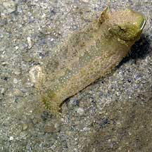
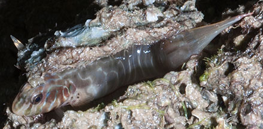
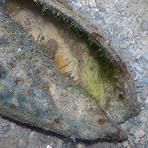
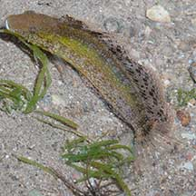

|
|
| fishes text index | photo index |
| Phylum Chordata > Subphylum Vertebrate > fishes |
| Blennies Family Blenniidae updated Sep 2020
Where seen? Small fang-blennies are sometimes encountered on some of our Southern shores, among seagrasses. Divers probably see a greater variety of blennies. What are blennies? Blennies belong to the Family Blenniidae. From FishBase: the family has 53 genera and 345 species. They are found in the Indian, Atlantic and Pacific Oceans mainly in tropical and subtropical marine habitats. Features: Most blennies are small, 10-15cm or smaller. They are generally elongated, lack scales and have a slimy skin. 'Blennos' means 'mucus-like' in Greek. Most have a continuous dorsal fin along the body length and are thus somewhat eel-like. Head usually blunt with short tentacles on eyes, nose opening. As a group, they come in a wide variety of shapes, colours and patterns. |
 Pulau Semakau, Dec 05 |
 East Coast, Aug 09 |
| What do they eat? Most blennies
are bottom feeders, nibbling on small animals, algae and detritus.
Others eat plankton. Some blennies, however, take on larger animals,
and specialise in chomping a mouthfull of scales and fins of bigger
fish! To get close to their 'prey', these blennies often mimic cleaner
fishes. Fearsome little fishes: A group of blennies called the Sabre-toothed or Fang-blennies have small mouths but large teeth on their lower jaws which are mainly used for defence. Some have a venomous bite! Another group of blennies are called Combtoothed blennies which have blunt heads, a wide mouth and comb-like teeth. Some blennies are territorial and can be aggressive even towards larger animals. |
 Guarding eggs laid inside a snail shell. Pulau Pawai, Dec 09 |
||
| Blenny babies: Males attract females to lay their eggs in a small hole or crevice, on or underneath empty bivalve shells, or in empty tubeworm holes. The eggs are then guarded by the male or by both parents. On our shores, blennies have been seen guarding eggs laid in large empty snail and clam shells. |
| Some blennies on Singapore shores |
 Variable fang-blenny |
 Oyster-blenny |
 Rockskipper blenny |
| Family
Blenniidae recorded for Singapore from Wee Y.C. and Peter K. L. Ng. 1994. A First Look at Biodiversity in Singapore. *from Lim, Kelvin K. P. & Jeffrey K. Y. Low, 1998. A Guide to the Common Marine Fishes of Singapore. **from WORMS +Other additions (Singapore Biodiversity Records, etc)
|
Links
References
|